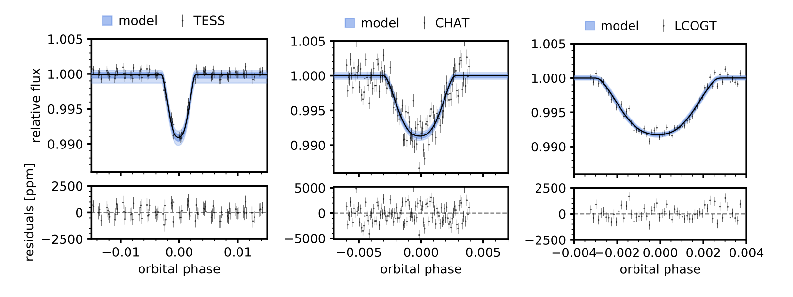
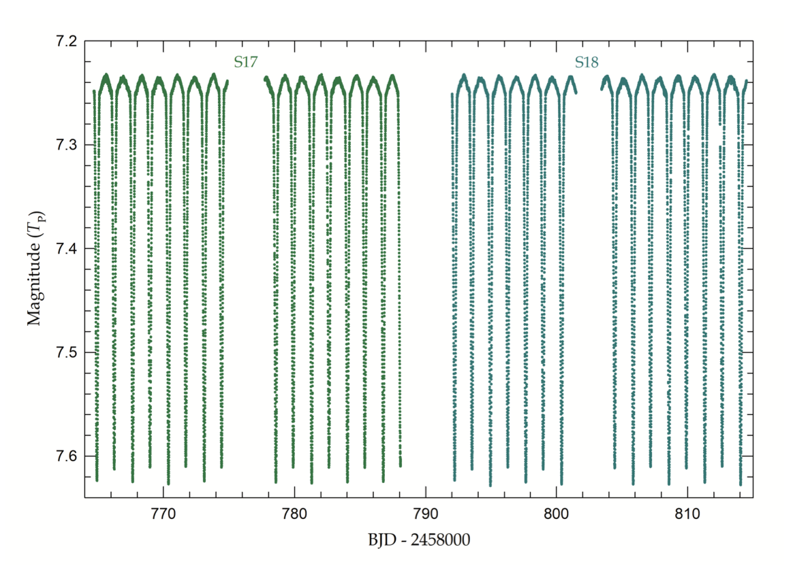
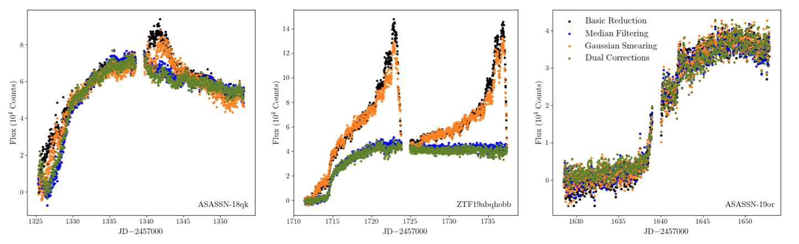

Welcome TESS followers to this weeks news bulletin! This week we have three papers from the archive.
A Highly Eccentric Warm Jupiter Orbiting TIC 237913194 (Schlecker et. al., 2020):
By studying the orbital parameters of warm Jupiters it is possible to gain insight, and place constraints, on the formation mechanisms of such giant planets in close to intermediate orbits. In this paper the authors present the discovery of TIC 237913194b using TESS Sector 1 and 2 data, ground-based photometry from CHAT and LCOGT, and radial velocity time series from FEROS.
The mass of the planet was determined as MP = 1.942 MJ, with a radius of RP = 1.117 RJ, this is similar to the bulk density of Neptune. The host star is G-type star with a mass of 1.026 M⊙, a V magnitude of 12.1, and a period of 15.17 days, in an eccentric orbit with e ≈ 0.58. The unusual dynamical state indicates a past interaction with an undetected massive companion. A tidal evolution analysis suggested a large tidal dissipation timescale which indicates that the planet is not a candidate for a hot Jupiter.
β Cephei Pulsations in the High-mass Eclipsing System CW Cephei (Lee et. al., 2020):
Using data from Sectors 17 and 18 the authors have studied CW Cep, an early B-type eclipsing binary, and discovered pulsation signatures in the time-series.
Through binary modeling the authors have found that the star is part of a partially-eclipsing detached system with masses of 12.95 and 11.88 M⊙, and radii of 5.52 and 5.09 R⊙ respectively. The system has an eccentric orbit of e = 0.0305, and is at a distance of 928 ± 36 pc.
Multi-frequency analysis was applied to the residual TESS light-curve outside of the eclipse range, this allowed for the detection of 13 signals in two frequency regions. Six of the frequencies were below 1 day-1 and appeared to be orbital harmonic and combination terms, or sidelobes associated with insufficient removal of the binary signal. The remaining seven were clustered around 2.73 day-1 and 5.34 day-1, and could be considered β Cep-type pulsations.
The results presented in this paper represent the second discovery of β Cep pulsations present in double-lined eclipsing binaries with precise masses.
High-Cadence, Early-Time Observations of Core-Collapse Supernovae From the TESS Prime Mission (Vallely et. al., 2020):
The authors of this paper present the lightcurves of 20 core collapse supernovae (CC SNe) from TESS. These are all bright SNe with TESS-band magnitudes ≲ 18 mag. Using an image subtraction pipeline developed by the All-Sky Automated Survey for Supernovae (ASAS-SN) and optimized for TESS, the data were reduced and lightcurves obtained.
When applying an empirical fits to the rise of the lightcuves, the authors do not find a strong correlation between the fit parameters and the peak luminosity of the SN. For Type II CC SNe they find that existing semi-analytic models fit the lightcurves well, but do not yield reasonable estimates for the progenitor radius or explosion energy. The reason for this discrepancy is likely due to the fact that TESS data uses near-infrared observations, and the models were derived for use with UV observations. The authors then tried to fit the data with numerically simulated lightcurves and found that the rising lightcurves of the Type II SNe were consistent with the explosions of red supergiants.
No shock breakout emission was found for any individual event, but on combination of the fit residuals for Type II SN, they did find a >5σ flux excess in the ~half day before the start of the lightcurve rise. The authors state that this is likely due to shock breakout emission, and that during its extended mission TESS will likely observe a Type II supernova bright enough for this signal to be detected directly.

Fig 1. Taken from Schlecker et. al., (2020). The phase-folded TESS photometry around the transit events is shown in the left panel. The follow-up photometry of a single transit obtained with CHAT in the i′ band is shown in the center panel. LCOGT photometry of a single transit in the i' band is shown in the right panel.

Fig 2. Taken from Lee et. al., (2020). TESS time-series data of CW Cep observed during Sectors 17 (green) and 18 (cyan).

Fig 3. Taken from Vallely et. al., (2020). The four light curves produced from the automated subtraction technique developed for the TESS data. ASASSN-18qk (left), ZTF19abqhobb (middle), and ASASSN-19or (right). In the cases of ASASSN-18qk and, particularly, ZTF19abqhobb, it is clear that incorporating median filtering in the processing sequence greatly improves the light curve quality. In some cases, like ASASSN-19or, however, there is no clear benefit to the additional processing steps.